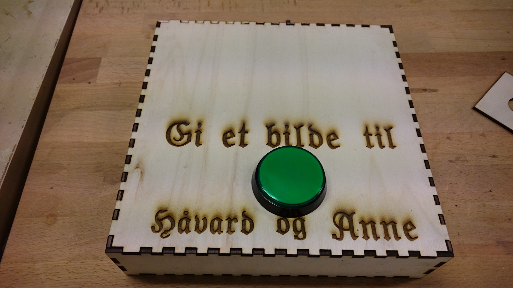
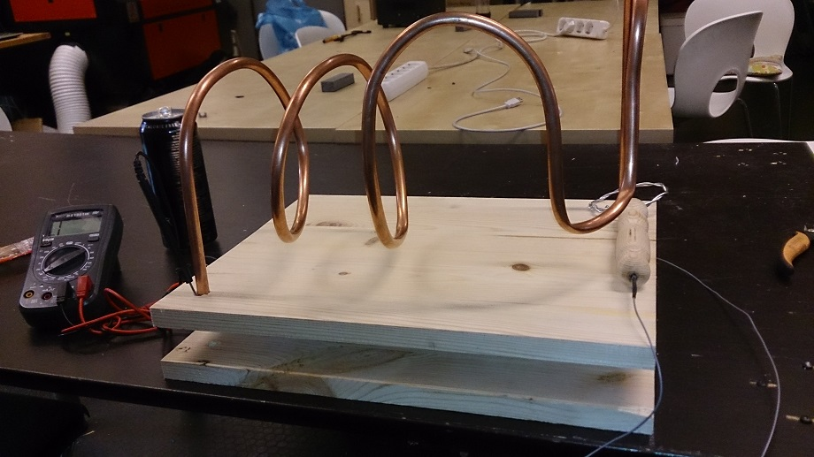
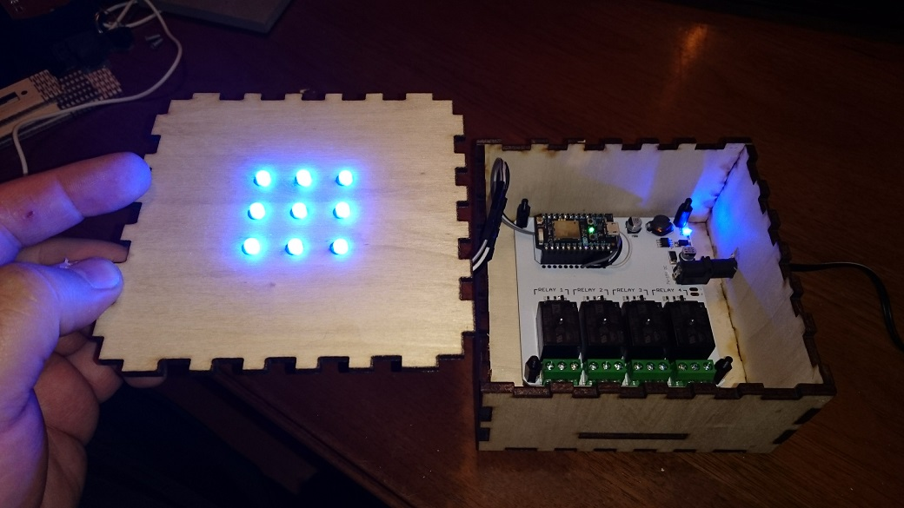

My Nightcafe page
Here's some of my projects
PentaclockSyklon 1.0 vacuum adapter
Rostock 3D printer
Rimfakse - the autonomos racing car
Dicetower
IoT Button
Duck Mover
LolliBot
Photobooth Box
Light Tower
First Wire Game
Second Wire Game
Creeper
Garage Opener
Tentacle Mold
Mobile Player Unknown Battle ground
Mobile PUBG is a game where you play PUBG on your phone/tablet. I compiled a video of some of my higlights.
Pentaclock
It's a binary pentagram clock, loosely inspired by the Mengenlehreuhr
Available for viewing at https://pentaclock.art
You can also view the source code at Github.
Rimfakse - the autonomos racing car
Rimfakse is named after a mythical horse from Norse mythology. It is an autonomos car competing in robotic Folkrace.
Here is a picture of Rimfakse:
Here is another picture of Rimfakse in the nude:
Duck Mover
The Duck Mover is a robotic device for rubberducking, also a test of rotary encoder.
Here is an image of the Duck Mover:
.jpg)
Here is another image of the Duck Mover:
.jpg)
Rostock 3D printer
I made a 3D printer based on the Rostock 3D printer using Kreatures recepie and guidance.
The electronics underneath is a RAMPS 1.4 board with an Arduino Mega 2560. The firmware is repetier.

Dicetower
The Dicetower is a gaming accessory used to roll dice in a controlled manner. It helps prevent dice from falling off the table and provides a fair and random roll. This is cut and engraved with a lazercutter.
.jpg)
Here with open drawer:
.jpg)
Syklon 1.0 vacuum adapter
This is a syclone vacuum adapter I made for my home. You attach the vacuummachine to the top and the hose to the side. Then put a plastic bag on the bottom to catch the dirt.
Here it is ready befor paining:
Here it is painted:
IoT Button
The IoT Button is a programmable button that can trigger actions in your connected devices or services. It can be used for various purposes such as home automation, notifications, and more.
Here is an image of the IoT Button:
Here is another image of the IoT Button:

LolliBot
LolliBot is a small robot designed to dispense lollipops. It uses a robotic arm to pick up lollipops from a stand and deliver them to users. I made this with Anders for a makerfaire in Oslo and gave away 3Kg of lollipots over two days. Very popular.
Here is an image of LolliBot:
Here is another image of LolliBot in action:
Photobooth Box
The Photobooth Box is a portable photo booth that allows users to take fun and memorable pictures at events. It is equipped with a camera, lighting, and props to enhance the photo-taking experience.
Here is an image of the Photobooth Box:
Here is another image of the Photobooth Box:
Light Tower
The Light Tower is a tall structure equipped with lights that are used for signaling business status for the person at a desk in a open office landscape. It connects to an MQTT-queue online.
Here is an image of the Light Tower:
Here is another image of the Light Tower:
First Wire Game
The First Wire Game is a puzzle game where players have to complete the track without touching the path. This was my first attemt.
Here is an image of the First Wire Game:
Here is another image of the First Wire Game:
Second Wire Game
The Second Wire Game is a puzzle game where players have to complete the track without touching the path. This was my second attemt. Frank helped in the making and did the coding on the server for the GUI. We made this for NDC at work.
Here is an image of the Second Wire Game:
Here is another image of the Second Wire Game:
Second Wire Game in use:
Creeper
The Creeper is a fictional character from the game Minecraft. It is a hostile mob that explodes when it gets close to the player. The Creeper has become an iconic symbol of the game. It is made of two laser cut boxes, "fur", microcontroller and a servo.
Here is an image of the Creeper:
Here is another image of the Creeper:
Garage Opener
The Garage Opener is a device that allows users to remotely open and close their garage doors. It is controlled through a mobile app and can also be integrated with smart home systems.
Here is an image of the Garage Opener:
Here is another image of the Garage Opener: